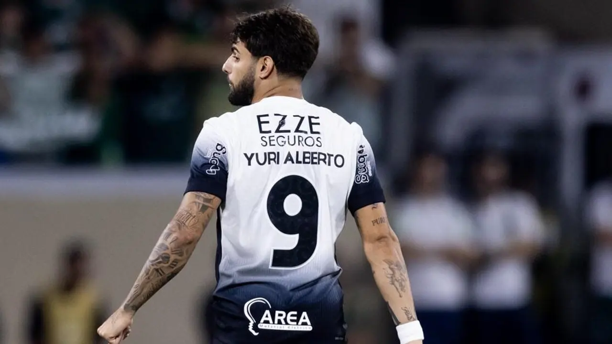
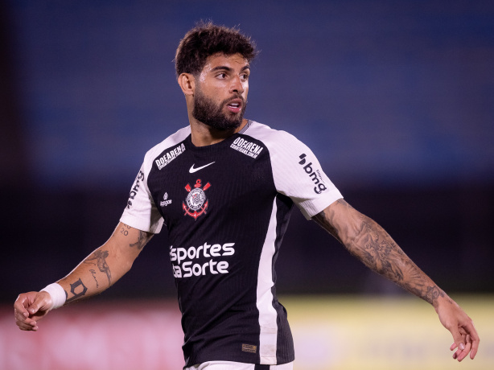

Yuri Alberto
Yuri Alberto chegou ao Corinthians em 2022, inicialmente por empréstimo, vindo do Zenit, da Rússia. Em janeiro de 2023, o clube paulista oficializou sua contratação em definitivo, adquirindo 50% dos direitos do jogador em um acordo que envolveu a ida de Robert Renan e Du Queiroz para o clube russo.

Desde sua chegada, Yuri Alberto tornou-se peça fundamental no ataque do Timão. Em 2025, ele alcançou a marca de 150 jogos pelo clube e foi decisivo na conquista do Campeonato Paulista, marcando o gol do título contra o Palmeiras. Além disso, foi eleito o melhor jogador da competição e integrou a seleção do campeonato.